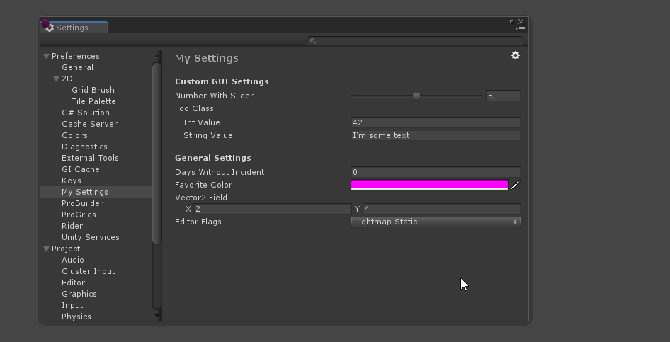

Settings Manager¶
A framework for making any serializable field a setting, complete with an procedurally popuplated Settings Provider.

Quick Start¶
Settings are saved in ISettingsRepository instances. Two default implementations are provided, one for saving user settings (UserSettingsRepository) and one for per-project settings (ProjectSettingsRepository). Settings repositories are responsible for saving and loading preferences.
You may work directly with ISettingsRepository, or create a Settings instance to manage them. Creating a Settings is convenient because it allows you to make use of the UserSetting class and attribute.
The most common case will be for packages to create a Settings manager with two repositories, one for user settings (SettingsScope.User) and one for per-project settings (SettingsScope.Project).
Below is an example of how most packages will use this api.
using UnityEditor;
using UnityEditor.SettingsManagement;
using UnityEngine;
public class MySettings
{
static Settings s_SettingsInstance;
public static Settings instance
{
get
{
if(s_SettingsInstance == null)
s_SettingsInstance = new Settings("com.unity.my-package");
return s_SettingsInstance;
}
}
// Register a new SettingsProvider that will scrape the owning assembly for [UserSetting] marked fields.
[SettingsProvider]
static SettingsProvider CreateSettingsProvider()
{
var provider = new UserSettingsProvider("Preferences/My Settings",
instance,
new [] { typeof(MySettings).Assembly });
return provider;
}
}
public class Test
{
[UserSetting("User Settings", "My User Int Value")]
static UserSetting<int> userSetting = new UserSetting<int>(MySettings.instance, "MyInteger", 42, SettingsScope.User);
[UserSetting("Project Settings", "My Project Int Value")]
static UserSetting<int> projectSetting = new UserSetting<int>(MySettings.instance, "MyInteger", 42, SettingsScope.Project);
[MenuItem("Debug/Print Settings Values")]
static void PrintValues()
{
Debug.Log($"User integer is: {(int) userSetting}, and project integer is {(int) projectSetting}");
}
}
Values are set and retrieved using generic methods on on your Settings instance:
MySettingsManager.instance.Get<float>("myFloatValue", SettingsScopes.Project);
The Settings class will handle finding an appropriate ISettingsRepository for the scope (and optional repository name), while key and T are used to find the value. Setting keys are unique among types, meaning you may re-use keys as long as the setting type is different.
// UserSetting<T> is a wrapper class that handles saving and loading serializable values. It is compatible with the `[UserSetting]` attribute, which is used to automatically populate a settings provider.
UserSetting<int> myIntValue = new UserSetting<int>(MySettingsManager.instance, "MyIntegerKey", 42, SettingsScopes.User);
UserSetting<T> caches the current value, and keeps a copy of the default value so that it may be reset. UserSetting<T> fields are also eligible for use with the [UserSetting] attribute, which lets the UserSettingsProvider automatically add it to a settings inspector.
Settings Provider¶
To register your settings in the Settings Window you can either write your own SettingsProvider implementation, or use the provided UserSettingsProvider and let it automatically create your interface.
Making use of UserSettingsProvider comes with many benefits, including a uniform look for your settings UI, support for search, and per-field or mass reset support.
using UnityEngine;
namespace UnityEditor.SettingsManagement.Examples
{
static class MySettingsProvider
{
[SettingsProvider]
static SettingsProvider CreateSettingsProvider()
{
var provider = new UserSettingsProvider("Preferences/My Settings",
MySettingsManager.instance,
new [] { typeof(MySettingsProvider).Assembly });
return provider;
}
}
}
To register a field with UserSettingsProvider, simply decorate it with [UserSetting(string displayCategory, string key)]. [SettingAttribute] is only valid for static fields.
For more complex settings that require additional UI (or simply don’t have a built-in editor), you can use UserSettingBlockAttribute. This provides access to the settings provider GUI. See SettingsExamples.cs for more on this.